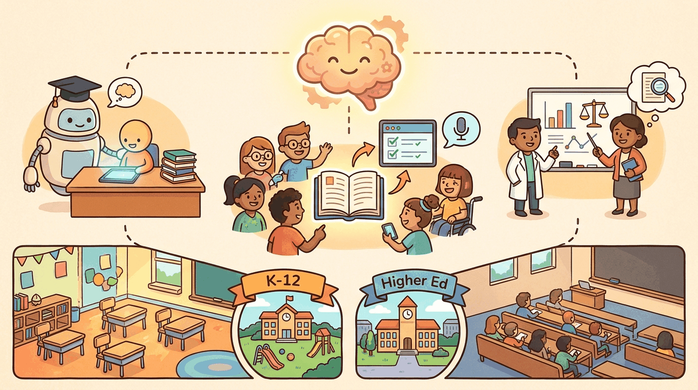

capturing the theme: Tutoring, assessment, content generation, accessibility. Pedagogical evidence, integrit...Education was the first industry where LLMs simultaneously thrilled and terrified practitioners. Thrilling: the long-imagined "tutor for every student" suddenly seemed possible. Terrifying: the "essay-writing assistant for every student" arrived first. 2026 settled some of the early debates (yes, AI tutoring works for specific tasks; no, plagiarism detectors don't reliably identify LLM-generated text) and opened new ones (what does mastery mean when LLMs can do most of the homework?). Section 54.1 walks through the use cases that have stabilized. Section 54.2 covers the failure modes. Section 54.3 covers FERPA, COPPA, and the regulatory framework. Section 54.4 walks through the pedagogically-scaffolded tutor architecture. Section 54.5 closes with the vendor landscape.
Sections in This Chapter
What Comes Next
Education produced the Socratic-prompt-as-product pattern that the next vertical inverts: Chapter 55 on cybersecurity covers the industry where the same prompt-injection failure mode that educational LLMs treat as a pedagogical inconvenience is treated as a primary attack vector.